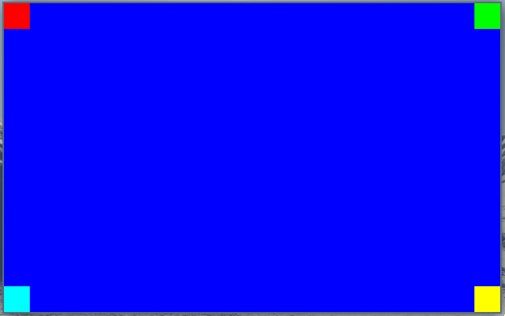

Manipulating Pixels
In the previous chapter we created a window and filled it with blue color. This works but it's cumbersome to index the correct location in the buffer as well as defining the color as a 32-bit integer. In this chapter we will look at creating another source file which will make all of that a lot easier. Paving the way to finally make some triangles appear.
Creating the Renderer
To keep the src/main.c file clean all the code related to rendering pixels will be inside src/renderer.c file. Let's create that file and associated header file.
touch src/renderer.h
touch src/renderer.c
Initially the renderer will contain some macros to help define colors more easily, as well as indexing and writing pixels to the pixels byte array. To demonstrate this functionality we'll also add a function for filling the window with a color and filling a rectangle (subset of the window) with a color.
renderer.h
Start by filling in the header guard defines this is common practice for all header files to prevent them from being included every time:
// renderer.h
#ifndef RENDERER_INCLUDED
#define RENDERER_INCLUDED
// TODO: Declarations goes here
#endif // RENDERER_INCLUDED
Now replace the TODO: Declarations goes here comment with the following struct declaration. This struct will be used to pass information about the pixel buffer we're rendering into to the rendering. This helps keep the number of arguments we need to pass into macros and functions to a minimum. We'll also add a helper function for creating instances of this struct:
typedef struct renderer_target_buffer {
int32_t width;
int32_t height;
int32_t bytes_per_pixel;
uint8_t* pixels;
} renderer_target_buffer;
renderer_target_buffer
renderer_create_target_buffer(int32_t width, int32_t height, int32_t bytes_per_pixel, uint8_t* pixels);
Declare the renderer_rect struct below the renderer_target_buffer struct declaration:
typedef struct renderer_rect {
int32_t x;
int32_t y;
int32_t w;
int32_t h;
} renderer_rect;
Add the following macros below the renderer_rect struct. These macros help pack 3 or four channel color values into a single 32 bit integer, as well as indexing the pixel buffer by offset or x,y coordinates:
// Pack 3 color bytes into one uint32
#define PackColorRGB(r, g, b) (r & 0xff) << 16 | (g & 0xff) << 8 | (b & 0xff)
// Pack 4 color bytes into one uint32
#define PackColorRGBA(r, g, b, a) (a & 0xff) << 24 | PackColorRGB(r, g, b)
// Index pixel at x, y coordinates within renderer_target_buffer target
#define IndexPixel(x, y, target) (x + y * target.width) * target.bytes_per_pixel
// Put pixel at offset into target
#define PutPixelByteOffset(target, offset, color) *(uint32_t *)(target.pixels + offset) = color
// Put pixel at x,y into target
#define PutPixelXY(target, x, y, color) PutPixelByteOffset(target, IndexPixel(x, y, target), color)
Below the macro definitions we can add the function declarations. We'll add three functions for now; one to help create the renderer_target_buffer structure and the two others to fill entire window or a part of the window with desired color:
renderer_target_buffer
renderer_create_target_buffer(int32_t width, int32_t height, int32_t bytes_per_pixel, uint8_t* pixels);
void
renderer_fill(renderer_target_buffer buffer, uint32_t color);
void
renderer_fill_rect(renderer_target_buffer buffer, renderer_rect rect, uint32_t color);
renderer.c
The implementation of src/renderer.c will be fairily straight forward because of the macros and structure we've defined in the header. Put the following content inside the src/renderer.c file:
// renderer.c
#include <stdint.h>
#include "renderer.h"
renderer_target_buffer
renderer_create_target_buffer(int32_t width, int32_t height, int32_t bytes_per_pixel, uint8_t *pixels)
{
renderer_target_buffer target = {
width, height, bytes_per_pixel, pixels
};
return target;
}
void
renderer_fill(renderer_target_buffer buffer, uint32_t color)
{
uint32_t fill_until = buffer.width * buffer.height * buffer.bytes_per_pixel;
uint32_t per_pixel_add = buffer.bytes_per_pixel;
for (int offset = 0; offset < fill_until; offset += per_pixel_add)
{
PutPixelByteOffset(buffer, offset, color);
}
}
void
renderer_fill_rect(renderer_target_buffer buffer, renderer_rect rect, uint32_t color)
{
for (int y = rect.y; y < rect.y + rect.h; y++)
{
for(int x = rect.x; x < rect.x + rect.w; x++)
{
PutPixelXY(buffer, x, y, color);
}
}
}
Beware, there's no clipping implemented yet so passing in rectangles which goes outside the available pixel buffer space will cause segmentation faults or other memory related errors.
Testing
We'll make some changes to src/main.c to test the new src/renderer.c implementation. Filling the window with a color like before as well as putting some colored squares in each corner of the window.
Update src/main.c with the following, put this code between the game_window_surface_lock_pixels(game_window); and game_window_surface_unlock_and_update_pixels(game_window); lines:
int32_t bytes_per_pixel = 4;
renderer_target_buffer pixel_buffer =
renderer_create_target_buffer(game_window->pixel_buffer_width, game_window->pixel_buffer_height, bytes_per_pixel, game_window->pixels);
renderer_fill(pixel_buffer, PackColorRGB(0, 0, 255));
if (game_window->pixel_buffer_width != 0)
{
renderer_rect top_left = {
0, 0, 32, 32
};
renderer_rect top_right = {
pixel_buffer.width - 32,
0, 32, 32
};
renderer_rect bottom_left = {
0,
pixel_buffer.height - 32,
32, 32
};
renderer_rect bottom_right = {
pixel_buffer.width - 32,
pixel_buffer.height - 32,
32, 32
};
renderer_fill_rect(pixel_buffer, top_left, PackColorRGB(255, 0, 0));
renderer_fill_rect(pixel_buffer, top_right, PackColorRGB(0, 255, 0));
renderer_fill_rect(pixel_buffer, bottom_left, PackColorRGB(0, 255, 255));
renderer_fill_rect(pixel_buffer, bottom_right, PackColorRGB(255, 255, 0));
}
Don't forget to include the src/renderer.h file at the top of src/main.c as well:
#include "renderer.h"
Now all that's left to do is updating the CMakeLists.txt to include src/renderer.c when building the application.
add_executable(back_to_basics src/main.c src/game_window.c src/renderer.c)
Now try to build the application and if everything was alright observe the results, it should look like this: 
Full diff for this chapter
modified CMakeLists.txt
@@ -7,5 +7,5 @@ set(CMAKE_C_STANDARD 11)
find_package(SDL2 REQUIRED)
include_directories(back_to_basics ${SDL2_INCLUDE_DIRS})
-add_executable(back_to_basics src/main.c src/game_window.c)
+add_executable(back_to_basics src/main.c src/game_window.c src/renderer.c)
target_link_libraries(back_to_basics ${SDL2_LIBRARIES})
modified src/main.c
@@ -3,6 +3,7 @@
#include <SDL2/SDL.h>
#include "game_window.h"
+#include "renderer.h"
int main(int argc, char* argv[])
{
@@ -21,14 +22,39 @@ int main(int argc, char* argv[])
game_window_surface_lock_pixels(game_window);
- uint32_t *pixels_32bpp = (uint32_t *)game_window->pixels;
- for (int y = 0; y < game_window->pixel_buffer_height; y++)
+ int32_t bytes_per_pixel = 4;
+ renderer_target_buffer pixel_buffer =
+ renderer_create_target_buffer(game_window->pixel_buffer_width, game_window->pixel_buffer_height, bytes_per_pixel, game_window->pixels);
+
+ renderer_fill(pixel_buffer, PackColorRGB(0, 0, 255));
+
+ if (game_window->pixel_buffer_width != 0)
{
- uint32_t row = y * game_window->pixel_buffer_width;
- for (int x = 0; x < game_window->pixel_buffer_width; x++)
- {
- pixels_32bpp[x + row] = 0xff0000ff;
- }
+ renderer_rect top_left = {
+ 0, 0, 32, 32
+ };
+
+ renderer_rect top_right = {
+ pixel_buffer.width - 32,
+ 0, 32, 32
+ };
+
+ renderer_rect bottom_left = {
+ 0,
+ pixel_buffer.height - 32,
+ 32, 32
+ };
+
+ renderer_rect bottom_right = {
+ pixel_buffer.width - 32,
+ pixel_buffer.height - 32,
+ 32, 32
+ };
+
+ renderer_fill_rect(pixel_buffer, top_left, PackColorRGB(255, 0, 0));
+ renderer_fill_rect(pixel_buffer, top_right, PackColorRGB(0, 255, 0));
+ renderer_fill_rect(pixel_buffer, bottom_left, PackColorRGB(0, 255, 255));
+ renderer_fill_rect(pixel_buffer, bottom_right, PackColorRGB(255, 255, 0));
}
game_window_surface_unlock_and_update_pixels(game_window);
new file src/renderer.c
@@ -0,0 +1,37 @@
+// renderer.c
+
+#include <stdint.h>
+#include "renderer.h"
+
+renderer_target_buffer
+renderer_create_target_buffer(int32_t width, int32_t height, int32_t bytes_per_pixel, uint8_t *pixels)
+{
+ renderer_target_buffer target = {
+ width, height, bytes_per_pixel, pixels
+ };
+
+ return target;
+}
+
+void
+renderer_fill(renderer_target_buffer buffer, uint32_t color)
+{
+ uint32_t fill_until = buffer.width * buffer.height * buffer.bytes_per_pixel;
+ uint32_t per_pixel_add = buffer.bytes_per_pixel;
+ for (int offset = 0; offset < fill_until; offset += per_pixel_add)
+ {
+ PutPixelByteOffset(buffer, offset, color);
+ }
+}
+
+void
+renderer_fill_rect(renderer_target_buffer buffer, renderer_rect rect, uint32_t color)
+{
+ for (int y = rect.y; y < rect.y + rect.h; y++)
+ {
+ for(int x = rect.x; x < rect.x + rect.w; x++)
+ {
+ PutPixelXY(buffer, x, y, color);
+ }
+ }
+}
\ No newline at end of file
new file src/renderer.h
@@ -0,0 +1,44 @@
+// renderer.h
+
+#ifndef RENDERER_INCLUDED
+#define RENDERER_INCLUDED
+
+typedef struct renderer_target_buffer {
+ int32_t width;
+ int32_t height;
+ int32_t bytes_per_pixel;
+ uint8_t* pixels;
+} renderer_target_buffer;
+
+typedef struct renderer_rect {
+ int32_t x;
+ int32_t y;
+ int32_t w;
+ int32_t h;
+} renderer_rect;
+
+// Pack 3 color bytes into one uint32
+#define PackColorRGB(r, g, b) (r & 0xff) << 16 | (g & 0xff) << 8 | (b & 0xff)
+
+// Pack 4 color bytes into one uint32
+#define PackColorRGBA(r, g, b, a) (a & 0xff) << 24 | PackColorRGB(r, g, b)
+
+// Index pixel at x, y coordinates within renderer_target_buffer target
+#define IndexPixel(x, y, target) (x + y * target.width) * target.bytes_per_pixel
+
+// Put pixel at offset into target
+#define PutPixelByteOffset(target, offset, color) *(uint32_t *)(target.pixels + offset) = color
+
+// Put pixel at x,y into target
+#define PutPixelXY(target, x, y, color) PutPixelByteOffset(target, IndexPixel(x, y, target), color)
+
+renderer_target_buffer
+renderer_create_target_buffer(int32_t width, int32_t height, int32_t bytes_per_pixel, uint8_t* pixels);
+
+void
+renderer_fill(renderer_target_buffer buffer, uint32_t color);
+
+void
+renderer_fill_rect(renderer_target_buffer buffer, renderer_rect rect, uint32_t color);
+
+#endif // RENDERER_INCLUDED
\ No newline at end of file